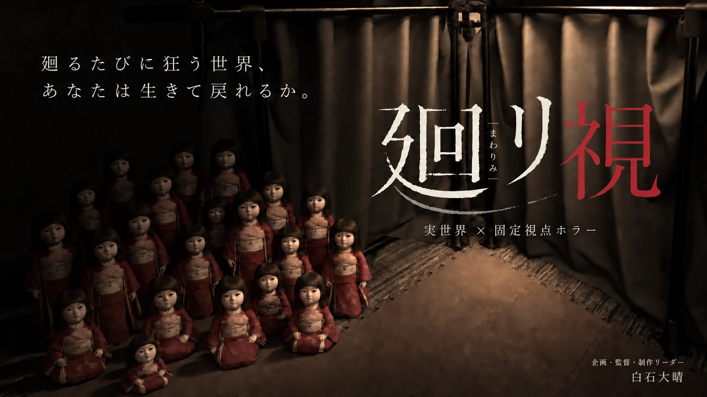
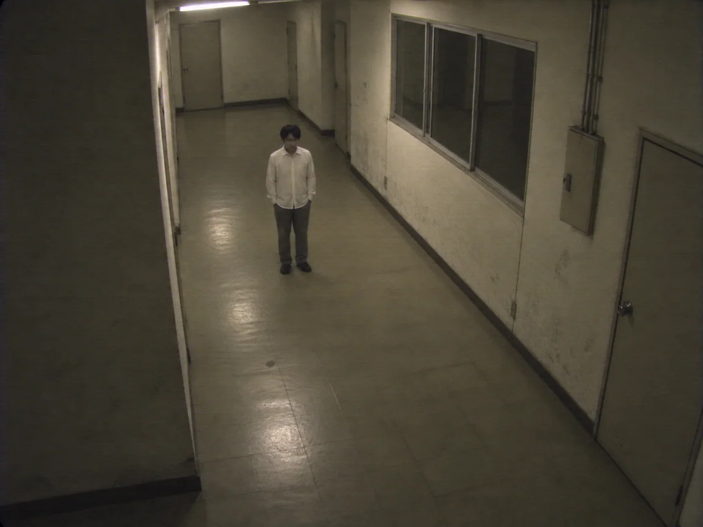
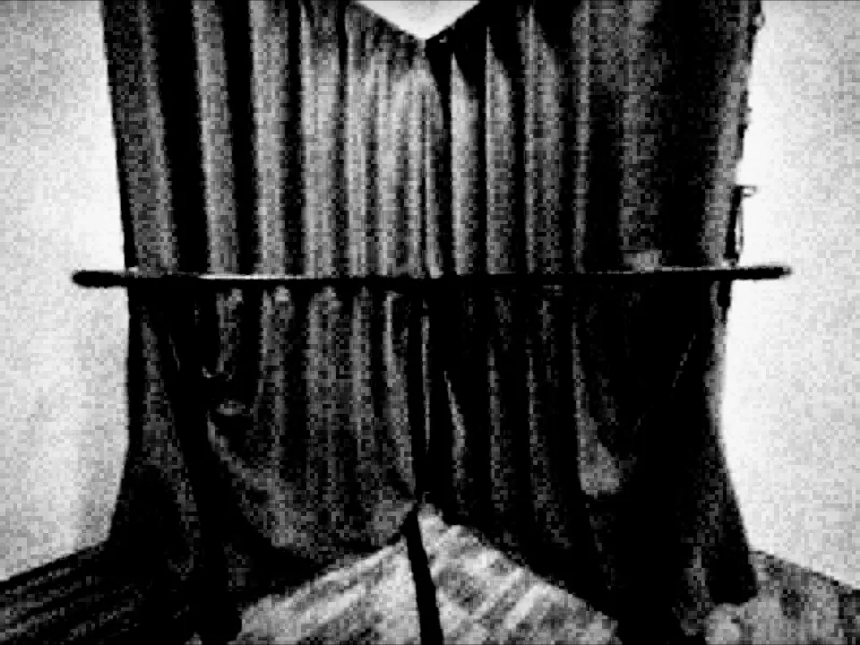
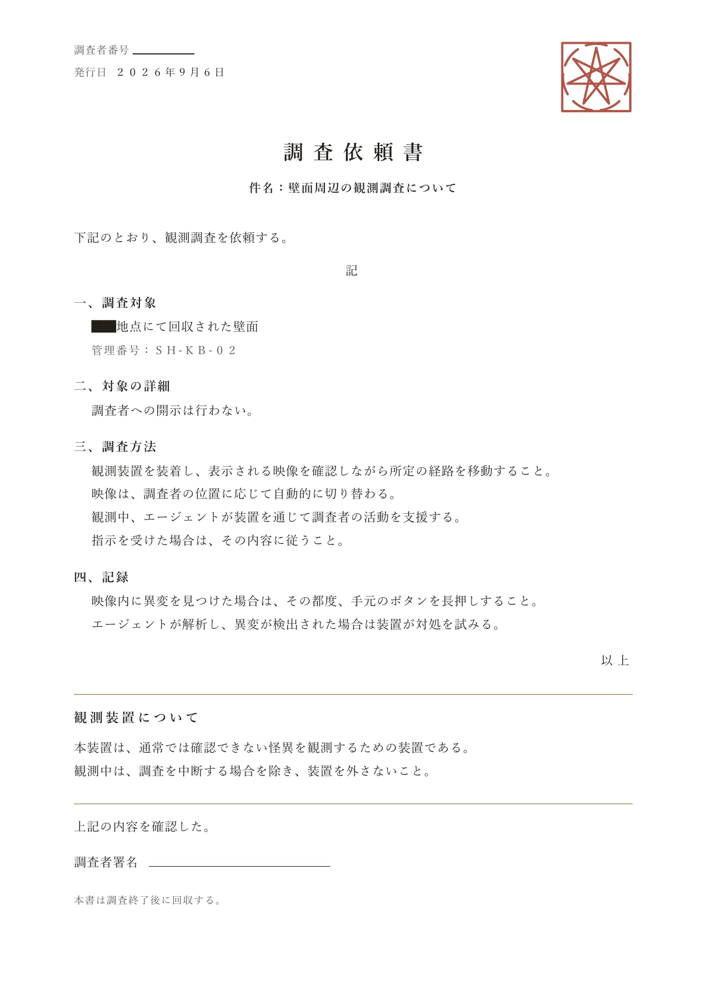

廻リ視（まわりみ）｜固定視点を用いた実世界ホラー体験

監視カメラに映る自分を見ながら
現実の空間を歩くホラー体験。
トレイラー
固定視点とは
実世界×固定視点
監視カメラに映る自分を見ながら、
現実の空間を歩く。
ヘッドセットに届くのは、その場所に置かれたカメラの映像。自分の体を離れた場所から見ながら、一歩を踏み出す。
CAMERA VIEW固定視点



カメラ 01
カメラを選んで、同じ場所を別の視点から見る。
ストーリー
あなたは、怪異調査員として、
呪われた壁の調査に向かう。



展示履歴
-
IVRC2026
総合優勝DCEXPO賞
-
DCEXPO2026
展示予定
演出一覧
ネタバレを含みます
演出を見るMeta Quest 3 実機録画
QUEST 3 / SINGLE EYE体験記録
現実がスクリーンになる
目の前の現実が割れて、映像を映すスクリーンへ変わる。
Meta Quest 3 / 片目の録画 / 音声なし
明滅を含みます。映像は再生ボタンで始まります。
クレジット
- 企画、監督
- 白石
- 企画書、動画制作
- 白石
- シナリオ、演出
- 白石
- サウンドデザイン
- 白石
- タイトル/ロゴデザイン
- 白石
- ソフトウェア開発
- 白石
- ラジコン日本人形制作
- 五島
- 壁床制作
- チーム
- テスト、フィードバック
- チーム
- 設営、展示
- チーム